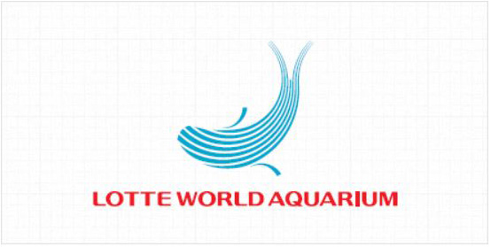
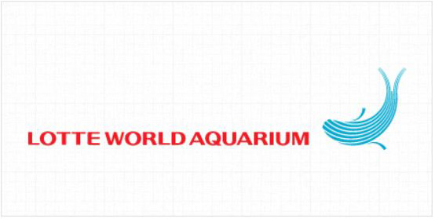
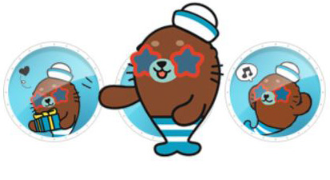
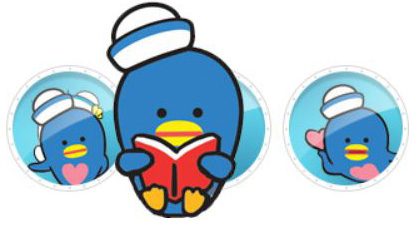
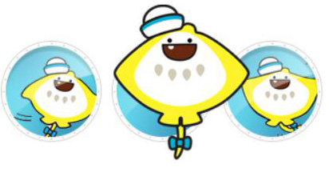

home>아쿠아리움>홍보자료
홍보자료
Brand Identity
롯데월드 아쿠아리움 BI 디자인은 바닷속 해양 동물의 움직임과 파도의 에너지를
직관적으로 표현하였으며, 모험적인(Adventurous), 활기찬 (Lively), 창의적인 (Imaginative),
즐거운 (Enjoyable) 이라는 주요 브랜드 가치를 함축하고 있습니다.
-
상하조합
 -
좌우조합

개성 강한 네 친구와 함께~!
롯데월드 아쿠아리움으로 떠나보아요.
-

- 루루
- 활기차고 호기심 가득한 아기벨루가 루루는 롯데월드 아쿠아리움의
마스코트입니다. 이야기하고 장난치는 것을 좋아해서 누구든지
금방 친구가 되고, 언제나 웃는 얼굴, 밝은 모습으로 즐거운 분위기를
만들어준답니다. 모두들 루루의 사랑스런 매력에 푹 빠질거에요.
-

- 레오
- 재주많은 바다사자 레오는 스스로를 슈퍼스타라고 여기며 뽐내기
좋아하는 유쾌한 친구에요. 항상 친구들에게 둘러싸여 주목을
받고싶어 한답니다. 넘치는 끼와 재능으로 롯데월드 아쿠아리움의
인기를 독차지하겠다는 큰 포부를 가지고 있어요.
-

- 핑핑
- 사랑을 나누어주는 하트펭귄은 아는 것도 많고 다른 친구들을 배려하는
마음이 큰 착한 성격의 소유자에요. 무표정한 것 같지만 그 속에는 따뜻한
마음을 가지고 있답니다.
-

- 가비
- 수줍음을 잘 타고 겁이 많은 가오리는 친해지기까지 시간이 조금
걸리지만, 친해지고 나서 보면 가끔 엉뚱한 모습을 보여주기도 하는
재미있는 친구에요. 하트펭귄과는 어릴때부터의 단짝이랍니다.